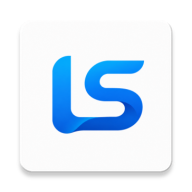

<!doctype html><html lang="zh-CN"><meta charset="utf-8"><meta name="viewport" content="width=device-width,initial-scale=1"><title>Local Signage · 设计预览</title><link rel="stylesheet" href="preview.css"><aside><strong>Local Signage <span class="demo">设计稿</span></strong><nav id="nav"></nav></aside><main><header><span>门店入口屏 <span class="pill">在线 · 可控制</span></span><div class="demo-upgrade"><span class="demo">示例数据</span><button class="primary" onclick="show('授权')">查看升级方式</button></div></header><article id="page"></article></main><div id="toast" role="status"></div><script>
const row=(a,b)=>`<div class="row"><span>${a}</span><span class="muted">${b}</span></div>`;const btn=(s,c='')=>`<button class="${c}" onclick="feedback()">${s}</button>`;const list=(arr)=>`<div class="list">${arr.map(x=>`<button onclick="feedback()">${x}<span>›</span></button>`).join('')}</div>`;const surface=(s)=>`<div class="surface">${s}</div>`;const poster = () => `<div class="display-poster"><div class="poster-name">本地内容示例</div><h1>欢迎光临</h1><p>把今天的好消息，带到每一块屏幕。</p><div class="poster-hours">每日营业 · 09:00 — 21:00</div></div>`;
const playbackControls = () => `<div class="native-controls" onclick="event.stopPropagation()"><button onclick="show('连接屏幕')">连接控制台</button><button id="nativePause" aria-label="暂停播放" onclick="toggleNativePlayback(this)">暂停</button></div>`;
function toggleNativePlayback(button) {
  const paused = button.textContent === '暂停';
  button.textContent = paused ? '继续播放' : '暂停';
  button.setAttribute('aria-label', paused ? '继续播放' : '暂停播放');
}
const pages={
'启动页': `<div class="native-start"><h1>Local Signage</h1><p>本地播放 · 局域网管理</p></div>`,
'播放控制页': `<div class="display-stage" onclick="this.querySelector('.native-controls').hidden = !this.querySelector('.native-controls').hidden">${poster()}${playbackControls()}</div>`,
'全屏展示页': `<div class="display-stage" role="button" tabindex="0" aria-label="显示播放控制" onclick="show('播放控制页')" onkeydown="if(event.key==='Enter'||event.key===' '){event.preventDefault();show('播放控制页')}">${poster()}</div>`,

'播放':`<h1>屏幕正在播放</h1><p>确认当前画面，再调整播放或发送新内容。</p><div class="grid">${surface(`<div class="screen"><div><span>当前内容 · 示例</span><h2>让日常，慢一点。</h2><p>门店迎宾画面</p></div></div>${row('迎宾场景','循环播放 · 已同步')}`)}${surface(`<h2>播放控制</h2><span class="status">门店入口屏 · 在线</span><div class="actions">${btn('上一项')}${btn('暂停','primary')}${btn('下一项')}</div><label>音量<input type="range" value="40" aria-label="音量"></label><div class="actions">${btn('静音')}${btn('停止')}</div>${row('播放来源','迎宾列表')}${row('最近异常','无')}`)}</div><div class="actions"><button class="primary" onclick="show('发送')">发送新内容</button></div>`,
'发送':`<h1>发送到屏幕</h1><p>先准备内容，再确认接收设备。</p>${surface(`<div class="actions">${btn('图片 / 视频','primary')}${btn('文字')}${btn('网页 / 直播')}${btn('HTML')}</div><label>选择本地文件<input type="file" multiple></label>${row('接收设备','门店入口屏')}${row('播放方式','立即播放')}<div class="notice">发布前确认目标设备。多设备的传输结果将逐台显示。</div>${btn('预览并确认发送','primary')}`)}`,
'内容':`<h1>内容库</h1><p>资源组成场景，场景组成播放列表。</p><div class="actions">${btn('资源','primary')}${btn('场景')}${btn('播放列表')}</div>${surface(`<input aria-label="搜索内容" placeholder="搜索名称或类型">${row('门店迎宾海报','图片 · 本地资源')}${row('营业时间','文字 · 本地资源')}${row('品牌短片','视频 · 本地资源')}<div class="actions">${btn('添加资源','primary')}${btn('新建场景')}${btn('新建播放列表')}</div>`)}`,
'设备':`<h1>管理屏幕</h1><p>先看连接状态，再选择要控制的屏幕。</p>${surface(`${row('门店入口屏','在线 · 正在播放')}${row('收银台屏幕','离线 · 检查网络')}<div class="actions">${btn('添加设备','primary')}${btn('管理分组')}${btn('刷新状态')}</div>`)}`,
'记录':`<h1>操作记录</h1><p>每次操作都有清楚的目标和结果。</p>${surface(`${row('今天 10:32 · 发布迎宾画面','门店入口屏 · 成功')}${row('今天 10:15 · 同步品牌短片','收银台屏幕 · 连接中断')}<div class="actions">${btn('重试失败设备','primary')}${btn('筛选记录')}</div><details><summary>诊断与维护</summary>${btn('导出诊断')}${btn('清空记录')}</details>`)}`,
'连接屏幕':`<h1>展示端 · 连接屏幕</h1><p>远距离可识别，近距离可操作。</p><div class="device"><span class="pill">等待连接</span><div class="grid" style="margin-top:30px"><div><h1>把内容发送到这里。</h1><p>手机或电脑连接同一局域网，打开下面的地址。</p><h2>192.168.1.108:8080</h2><p>配对码</p><div class="code">638 204</div></div><div class="surface" style="color:#182234;text-align:center"><div style="font-size:60px;padding:16px">▦</div><h2>扫码打开控制台</h2><span class="demo">二维码为占位示意</span></div></div><div class="actions">${btn('连接帮助')}${btn('授权与购买')}${btn('返回播放')}</div></div>`,
'欢迎':`<h1>展示端 · 欢迎</h1><div class="surface grid"><div><span class="status">Local Signage</span><h1 style="margin-top:18px;font-size:42px">你的屏幕，<br>你的内容。</h1><p>让图片、视频和信息在本地稳定播放。</p></div><div><h2>从连接这块屏幕开始</h2>${row('连接同一网络','手机与展示设备')}${row('打开控制台','扫码或输入地址')}${row('发送并播放','内容保存在设备本地')}<div class="actions"><button class="primary" onclick="show('连接屏幕')">开始设置</button></div></div></div>`,
'帮助':`<h1>需要什么帮助？</h1><p>从你现在要完成的任务开始。</p><div class="grid">${surface(`<h2>发布内容</h2>${list(['快速开始与连接控制台','发送文字、图片和视频','制作 HTML 画面','播放控制与显示设置'])}`)}${surface(`<h2>管理屏幕</h2>${list(['多设备控制','开机启动与后台守护','网络与播放问题','购买与恢复授权'])}`)}</div>`,
 '授权':`<h1>版本与授权</h1><p>查看当前权益，并为这台屏幕选择套餐。</p>
<div class="plan-status"><strong>当前版本 · 免费版</strong><span>已有内容可继续播放</span></div>
<div class="cards plans">
${[['月度','按月订阅','查看月度方案'],['年度','按年订阅','查看年度方案'],['永久','一次购买','查看永久方案']].map(([name,term,action],index)=>`<section class="surface plan ${index===1?'featured':''}"><div class="plan-name"><h2>${name} Pro</h2>${index===1?'<span class="pill">推荐</span>':''}</div><div class="price">${term}</div><p>价格以 Google Play 显示为准</p>${btn(action,index===1?'primary':'')}</section>`).join('')}</div>
<div class="surface plan-benefits"><h2>Pro 权益</h2>${row('内容与播放','网页、直播、HTML 与播放列表')}${row('多屏管理','管理并发布到多台屏幕')}</div>
<div class="actions">${btn('恢复购买')}${btn('重新加载套餐')}</div>`,
'法律与隐私':`<h1>法律与隐私</h1><p>了解数据如何使用，并管理统计偏好。</p>${surface(`${list(['隐私政策','服务条款','数据删除说明'])}<div class="row"><label for="stats">使用统计<br><span class="muted">可随时关闭，不影响本地播放。</span></label><input id="stats" type="checkbox" style="width:24px;margin:0"></div>`)}`,
'文章 / 文档':`<h1>连接控制台</h1><p>帮助文章示意</p>${surface(`<h2>让手机与屏幕在同一网络</h2><p>打开屏幕上显示的地址，输入配对码后即可管理本地内容。</p><h2>无法打开地址？</h2><p>检查两台设备的网络连接，确认路由器没有开启设备隔离。返回连接面板查看最新地址。</p><button onclick="show('连接屏幕')">查看连接面板</button>`)}`};
function feedback(){let t=document.getElementById('toast');t.textContent='设计交互示意 · 不会向设备发送命令';t.style.display='block';setTimeout(()=>t.style.display='none',2200)}function show(k){document.body.classList.toggle('display-mode',['播放控制页','全屏展示页'].includes(k));document.getElementById('page').innerHTML=pages[k];document.querySelectorAll('nav button').forEach(b=>b.classList.toggle('active',b.textContent===k));window.scrollTo(0,0)}document.getElementById('nav').innerHTML=Object.keys(pages).map(k=>`<button onclick="show('${k}')">${k}</button>`).join('');show('播放');const params=new URLSearchParams(location.search);if(Object.hasOwn(pages,params.get('screen'))){document.body.classList.add('device-preview');show(params.get('screen'));}if(Object.hasOwn(pages,params.get('page')))show(params.get('page'));</script></html>